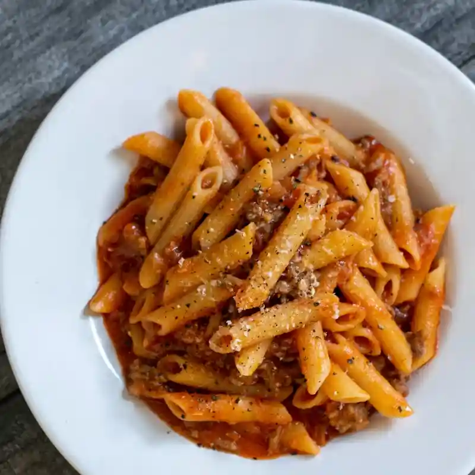

Dive into our top editorial selections, handpicked tips, and ultimate guides for a healthier kitchen.
Stay updated with our latest seasonal picks, storage hacks, and organic living guides.
Experience the magical journey of our farm-fresh ingredients transforming into delicious, healthy meals for your family.
A rich, comforting, and healthy pasta packed with farm-fresh organic vegetables delivered straight to your door.

Master your kitchen with our expert advice on shopping, storing, and sustainable living.

Discover simple, effective ways to control your grocery budget. Plan your meals ahead, buy in bulk for essentials, and always stick to your digital shopping list to avoid impulsive purchases.

Keep your fresh produce crisp for longer. Learn which fruits belong in the fridge and which should stay on the counter. Never store bananas next to apples to prevent over-ripening.
Make everyday cooking easier by grouping items by category. Use clear, airtight containers for grains and spices. Keep your most-used ingredients at eye level for quick access.
Use what you already have before buying more. Turn vegetable scraps into homemade broth, freeze overripe fruits for smoothies, and embrace the "First In, First Out" storage method.
Choose a better mix of daily essentials. Aim for a colorful variety of seasonal vegetables, lean proteins, and whole grains to ensure your family gets complete nutritional benefits.

The passionate culinary experts, chefs, and nutritionists behind our fresh editorial stories.
Discover useful grocery tips, recipes and fresh ideas — then find everything you need in one place.